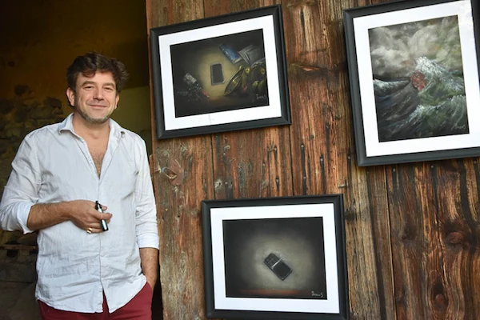

Le Broc : Daras, un artiste aux multiples talents
À l’occasion de cette rencontre, la journaliste Hélène Depailler revient sur le parcours de Daras, sa pratique du pastel sec et les thèmes qui traversent ses œuvres.
Actualités et publications
Retrouvez les articles, rencontres et publications consacrés au travail de Daras.

À l’occasion de cette rencontre, la journaliste Hélène Depailler revient sur le parcours de Daras, sa pratique du pastel sec et les thèmes qui traversent ses œuvres.
Espace presse
Sur demande, des visuels haute définition des œuvres, un portrait, une biographie ainsi que des informations complémentaires peuvent être mis à disposition des journalistes, rédactions,commissaires d'exposition, galeries, organisateurs d'expositions et professionnels de l'art.
Me contacter